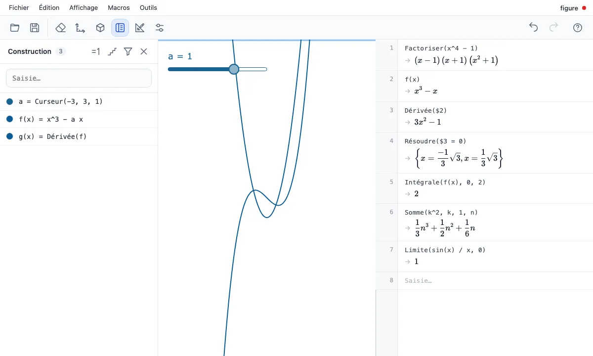

Le calcul formel
DocGeo calcule en valeurs exactes avec Giac, le moteur de calcul formel de Xcas et de GeoGebra : dérivées, primitives, factorisations, équations, limites, sommes, dans les formules de la figure comme dans une vue de calcul formel. Il trouve aussi l’équation d’un lieu et prouve des propriétés géométriques.

Giac est chargé la première fois qu’un calcul le demande, jamais pour une figure qui n’en a pas besoin. Les dernières réponses sont enregistrées dans la figure : elle s’ouvre et s’affiche sans attendre Giac, même hors ligne. Si Giac ne peut pas être chargé, « ⚠ Giac » apparaît en bas à gauche : les réponses déjà connues restent affichées, les autres sont indéfinies.
Les commandes de calcul formel
Elles s’emploient dans toute formule, comme une fonction. Une expression dont la formule n’est qu’une de ces commandes montre la réponse de Giac plutôt que sa formule.
| Commande | Résultat |
|---|---|
Dérivée(f),
Dérivée(e, v),
Dérivée(e, v, n)
|
dérivée, dérivée n-ième par rapport à v |
Intégrale(e),
Intégrale(e, v)
|
primitive |
Intégrale(x^2, 0, a),
Intégrale(e, v, a, b)
|
intégrale de a à b, valeur exacte |
Factoriser(e) |
factorisation sur les rationnels :
x^2 - 2 reste tel quel
|
FactoriseIrr(e) |
factorisation sur les radicaux : (x − √2)(x + √2) |
Développer(e),
Simplifier(e)
|
forme développée, forme simplifiée |
Résoudre(x^2 = 2),
Résoudre(e, v)
|
liste triée des solutions réelles d’une équation, ou d’une expression nulle |
CRésoudre(e) |
solutions complexes |
Somme(e, k, a, b) |
somme des e pour k entier de a à b |
Limite(e, a),
Limite(e, v, a)
|
limite en a, qui peut être ∞ |
PolynômeTaylor(e, a, n),
PolynômeTaylor(e, v, a, n)
|
polynôme de Taylor d’ordre n en a |
La variable v est x, y, z ou t, par défaut la première que lit
l’expression. Une fonction de la figure s’écrit par son nom :
g(x) = Dérivée(f).
-
Un curseur reste un symbole pour Giac :
Factoriser(x^2 - a)montre x² − a même quand a vaut 4. Déplacer le curseur ne demande donc rien à Giac : la réponse est seulement réévaluée, pendant le mouvement. -
Exceptions : l’ordre n d’un polynôme de Taylor, et les
bornes d’une somme sans forme simple (
Somme(1/k, k, 1, n)), sont lus par leur valeur : un curseur donne une réponse par valeur entière. -
Intégrale(f, a, b), f étant le nom d’une fonction, reste la commande qui trace l’aire ;Intégrale(x^2, 0, 1)ouIntégrale(e, v, a, b)calcule la valeur exacte. - Tant que la réponse n’est pas arrivée, l’objet garde sa dernière valeur. Une réponse que DocGeo ne sait pas lire rend l’objet indéfini. Une dérivée est calculée par DocGeo en attendant Giac.
La vue calcul formel
Comme celle de GeoGebra : des lignes de calcul numérotées, à côté de la figure ou dans leur propre onglet.
| Action | Comment |
|---|---|
| Ajouter la vue | Fichier › Vue › Nouvelle vue calcul formel (une par figure), ou Fichier › Nouvel onglet calcul formel (« CAS1 », « CAS2 »…) |
| Calculer une ligne | taper dans la dernière ligne, vide, puis Entrée : la réponse s’affiche et une nouvelle ligne attend |
| Modifier une ligne | cliquer dessus, puis Entrée ; Échap rend le texte d’avant, ↑ et ↓ passent d’une ligne à l’autre |
| Supprimer une ligne | la vider puis Entrée : les numéros suivants sont décalés |
| Supprimer la vue | Fichier › Vue › Supprimer la vue calcul formel |
Chaque changement s’annule par Annuler. Une ligne incomprise est refusée, en rouge.
Écrire une ligne
-
Une ligne est une formule, avec ou sans commande :
sqrt(12) - sqrt(3)donne √3,Factoriser(x^4 - 1)sa factorisation. -
$2est la réponse de la ligne 2. Quand une ligne est supprimée, les$nsont renumérotés, et une référence à la ligne supprimée est remplacée par sa formule. -
b := 3eth(x) := x^2 + 1définissent un nombre ou une fonction pour les lignes suivantes. -
Les objets de la figure sont lus par leur valeur du moment :
avec a = 2,
a^2donne 4. Quand on les déplace, les lignes qui les lisent sont recalculées. Une lettre qui n’est pas un objet est une variable libre :b^2reste b². -
pietlns’écrivent comme dans GeoGebra,∞aussiinf. Les angles sont toujours en radians, même dans une figure en degrés. -
Numérique(e),Numérique(e, n)donnent une valeur approchée (à n chiffres) ;ConserverSaisie(e)montre e tel quel, sans calcul. Une ligne entre guillemets,"Calcul exact", est un simple texte. -
?remplace une réponse que Giac ne donne pas ou que DocGeo ne sait pas lire.
Désigner à la souris
Pendant qu’on tape une ligne déjà commencée, cliquer un objet de
la figure écrit son nom ; cliquer une autre ligne écrit son
$n. Sur une ligne vide, la figure répond comme
d’habitude.
Définir un objet de la figure
Une définition qui ne lit que des objets de la figure crée aussi
l’objet, avec sa ligne dans la Construction :
m(x) := x^2 + a trace la fonction m. Une définition
qui lit une variable libre, un $n ou un nom défini
seulement dans la vue (n := b^2) reste propre à la
vue.
Dans le lecteur, les lignes sont montrées dans la langue du navigateur.
Courbes algébriques
Une équation de degré quelconque, ou non polynomiale, tapée dans
la Construction est une courbe :
f = x^3 + y^3 = 3x y (le folium de Descartes),
c = sin(x) = y. Elle est tracée là où elle traverse
la fenêtre et suit la fenêtre quand on la déplace ; on peut y
placer des points et la couper avec d’autres objets.
| Commande | Résultat |
|---|---|
EquationLieu(M, P) |
la courbe entière que décrit le point M quand le point sur objet P parcourt son objet |
Enveloppe(d, P) |
la courbe entière tangente aux positions de la droite d quand P parcourt son objet |
Comme dans GeoGebra, c’est l’équation entière, toutes ses
branches, et pas seulement la partie parcourue :
EquationLieu d’un point qui décrit un segment donne
la droite. En attendant Giac, ou pour une construction qu’il ne
traduit pas (macros, bissectrices, cercle inscrit, curseur pour
pilote, espace), c’est le lieu parcouru de
Lieu.
Prouver
Six prédicats, dont chaque argument est le nom d’un objet,
disent si une propriété est vraie sur la figure telle qu’elle
est : true ou false.
| Prédicat | Vrai si |
|---|---|
SontAlignés(A, B, C) |
les trois points sont alignés |
SontParallèles(d, e),
SontPerpendiculaires(d, e)
|
les droites, segments ou demi-droites sont parallèles, perpendiculaires |
SontCocycliques(A, B, C, D) |
les quatre points sont sur un même cercle (ou une même droite) |
SontConcourantes(d, e, f) |
les trois droites passent par un même point (ou sont parallèles) |
SontÉgaux(a, b) |
deux points, droites ou cercles confondus ; deux segments de même longueur ; deux nombres égaux |
Prouver(p), p étant l’un de ces prédicats, dit s’il
est vrai en général : pour toutes les positions des
points libres et des points sur objet, sauf cas dégénérés. Avec
G = CentreGravité(A, B, C),
SontAlignés(A, B, G) devient vrai quand on pose C
sur (AB), mais Prouver(SontAlignés(A, B, G)) reste
faux. Giac traduit la construction en équations, comme GeoGebra
: la réponse arrive en quelques secondes au plus, et elle est
enregistrée dans la figure.
-
Le calcul porte sur toutes les intersections à la fois :
pour parler de la seconde intersection d’une droite et d’un
cercle passant par un point A, la construire avec
AutreIntersection(c, d, A). -
Prouverreste indéfini pour une construction qu’il ne traduit pas (celles de EquationLieu, ou un angle, un rapport ou un rayon qui n’est pas une fraction simple, comme une rotation de 60°), et dans la vue calcul formel. -
Les arguments sont des noms : construire et nommer d’abord
les droites,
Prouver(SontParallèles(d, e)).
Figures GeoGebra
À l’import, les commandes de calcul formel des formules, les
lignes de la vue Calcul formel de GeoGebra, celles de sa
Calculatrice (Suite), LocusEquation,
Envelope, Prove et les prédicats sont
repris. Une cellule qui emploie une commande que DocGeo n’a pas
est signalée.